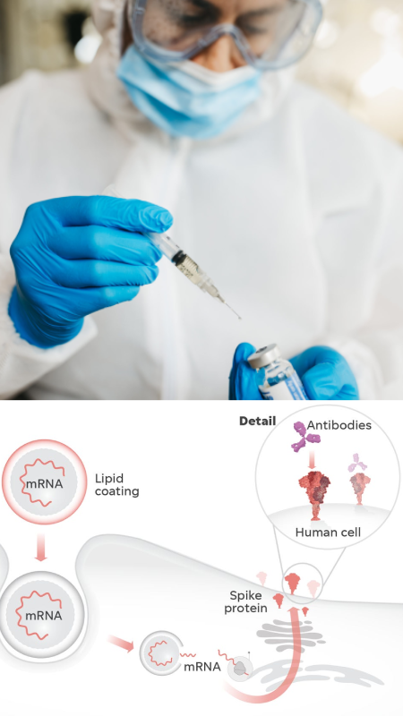

Blog
Los efectos de la cafeína: ¿Mito o realidad respaldada por evidencia científica?
La cafeína es una de las sustancias más consumidas en todo el mundo. Se encuentra presente en una amplia variedad de alimentos y bebidas, desde el café y el té hasta los refrescos y el chocolate. A menudo se la asocia con la energía y la capacidad de aumentar el estado de alerta, pero ¿qué dice la evidencia científica al respecto? En este artículo, exploraremos los efectos de la cafeína respaldados por la investigación para desentrañar los mitos y realidades asociados con esta popular sustancia estimulante.
- Aumento del estado de alerta y mejora del rendimiento cognitivo: Numerosos estudios han demostrado consistentemente que la cafeína puede mejorar el estado de alerta y la atención. La evidencia respalda su capacidad para aumentar la vigilancia, la concentración y la capacidad de respuesta, lo que puede ser beneficioso para tareas que requieren una atención sostenida, como el estudio o el trabajo intelectual. Además, se ha observado que la cafeína mejora el rendimiento en pruebas cognitivas, como la memoria y las funciones ejecutivas.
- Estimulación del sistema nervioso central: La cafeína actúa como un estimulante del sistema nervioso central, bloqueando los receptores de adenosina en el cerebro. Esto inhibe la acción de la adenosina, una sustancia que promueve la relajación y la somnolencia. Al bloquear estos receptores, la cafeína aumenta la liberación de dopamina y norepinefrina, neurotransmisores asociados con la vigilia y el estado de alerta. Sin embargo, es importante destacar que los efectos pueden variar según la dosis y la tolerancia individual.
- Rendimiento físico y capacidad de ejercicio: La cafeína también ha demostrado tener efectos beneficiosos en el rendimiento físico. Varios estudios han encontrado que la cafeína puede mejorar la resistencia, la fuerza muscular y la velocidad durante el ejercicio. Se cree que esto se debe a la capacidad de la cafeína para movilizar los ácidos grasos y aumentar la disponibilidad de energía. Además, la cafeína puede disminuir la percepción del esfuerzo, lo que permite a los individuos ejercitarse por períodos más prolongados.
- Efectos en el sueño y la calidad del sueño: Aunque la cafeína puede ser beneficiosa para aumentar la vigilia y la energía durante el día, su consumo excesivo o cercano a la hora de acostarse puede afectar negativamente el sueño. La cafeína tiene un tiempo de vida media de alrededor de 5 a 6 horas, lo que significa que puede permanecer en el organismo durante un tiempo prolongado. Estudios han demostrado que el consumo excesivo de cafeína puede interferir con el sueño y disminuir la calidad del mismo, especialmente si se consume por la tarde o noche.
Video relacionado: ¿Qué es la Cafeína? ¿Cuáles son sus efectos en la salud?
Explorando los diferentes tipos de vacunas: cómo funcionan y por qué son importantes
Las vacunas han sido una herramienta esencial en la prevención de enfermedades infecciosas a lo largo de la historia de la medicina. A medida que la ciencia avanza, también lo hacen las tecnologías utilizadas en la creación de vacunas. En este artículo, exploraremos los diferentes tipos de vacunas, desde las clásicas hasta las más innovadoras, y entenderemos cómo funcionan para fortalecer nuestro sistema inmunológico.
-
Vacunas de Microorganismos Inactivados
Las vacunas han sido una herramienta esencial en la prevención de enfermedades infecciosas a lo largo de la historia de la medicina. A medida que la ciencia avanza, también lo hacen las tecnologías utilizadas en la creación de vacunas. En este artículo, exploraremos los diferentes tipos de vacunas, desde las clásicas hasta las más innovadoras, y entenderemos cómo funcionan para fortalecer nuestro sistema inmunológico.
-
Vacunas de Microorganismos Atenuados
Numerosos estudios han demostrado consistentemente que la cafeína puede mejorar el estado de alerta y la atención. La evidencia respalda su capacidad para aumentar la vigilancia, la concentración y la capacidad de respuesta, lo que puede ser beneficioso para tareas que requieren una atención sostenida, como el estudio o el trabajo intelectual. Además, se ha observado que la cafeína mejora el rendimiento en pruebas cognitivas, como la memoria y las funciones ejecutivas.
-
Vacunas de Subunidades, Conjugadas y Recombinantes
En lugar de utilizar microorganismos completos, estas vacunas utilizan fragmentos específicos del patógeno, como proteínas o carbohidratos. Las vacunas contra el virus del papiloma humano (VPH) y la tos ferina son ejemplos de vacunas de subunidades. Las vacunas conjugadas, como la vacuna contra el Haemophilus influenzae tipo b (Hib), unen fragmentos del patógeno a una proteína transportadora para mejorar la respuesta inmunológica.
-
Vacunas de ARN Mensajero (ARNm)
Una innovación reciente en la creación de vacunas es la tecnología del ARNm. Las vacunas COVID-19 desarrolladas por Pfizer-BioNTech y Moderna son ejemplos de vacunas de ARNm. Estas vacunas instruyen a las células del cuerpo para producir una versión inofensiva de la proteína viral, lo que desencadena una respuesta inmunológica.
-
Vacunas de Vectores Virales
En este enfoque, se utiliza un virus diferente e inofensivo como "vector" para transportar genes del patógeno objetivo al cuerpo. La vacuna contra el ébola y la vacuna contra el virus del Zika son ejemplos de este tipo. El vector viral se modifica para que no cause enfermedad, pero aún así desencadena una respuesta inmunológica.
-
Vacunas de ADN
Similar a las vacunas de ARNm, estas vacunas introducen genes del patógeno en el cuerpo, pero en forma de ADN. Aunque aún se encuentran en desarrollo, tienen el potencial de ser eficaces y fáciles de producir. Se están investigando para una variedad de enfermedades, como la gripe y el VIH.

En resumen, las vacunas vienen en diferentes formas y tamaños, pero todas tienen un objetivo común: estimular una respuesta inmunológica para proteger a las personas de enfermedades infecciosas. A medida que la ciencia avanza, nuestras opciones para la prevención y el control de enfermedades continúan expandiéndose. La elección de la vacuna adecuada depende de diversos factores, incluyendo la enfermedad objetivo, la eficacia y la seguridad. En última instancia, las vacunas siguen siendo una de las herramientas más efectivas y valiosas en la lucha contra las enfermedades contagiosas.